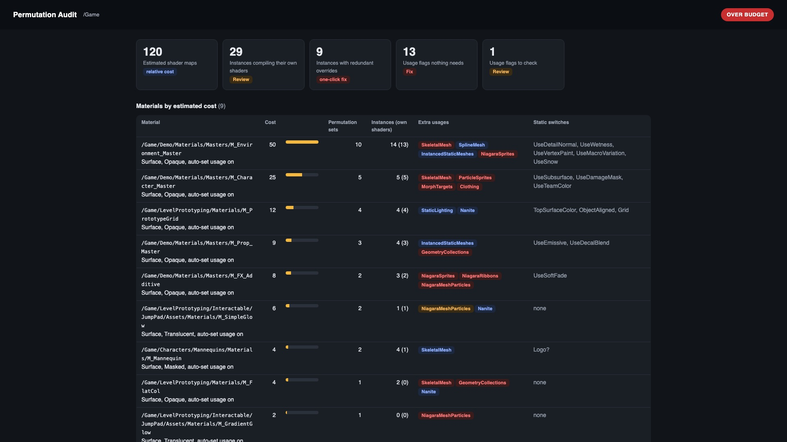
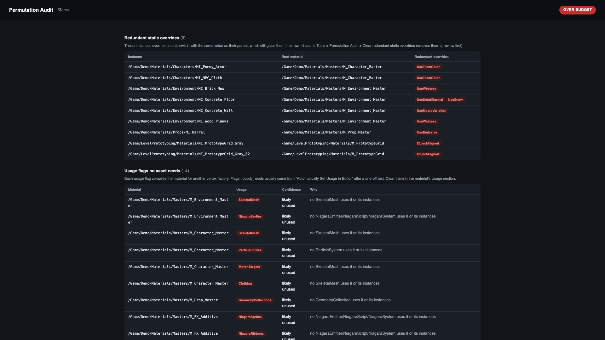
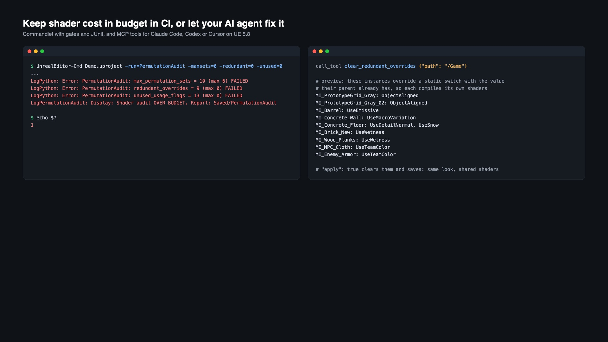

Find what multiplies your shader compiles
Every material instance that overrides a static switch compiles its own shaders, and every usage flag compiles the material again for another vertex factory. Permutation Audit shows which materials and instances cause it, and fixes the ones that cost you shaders for nothing.

Static switch permutations
Which instances compile their own shaders and why. Instances with identical static values are counted once.
Redundant overrides
Overrides with the value the parent already has. One click clears them: same look, shared shaders.
Usage flags nobody needs
Skeletal mesh, particle, Niagara, geometry collection, cache or groom flags no asset of that kind uses.
CI gates
Fail the build when a material grows too many permutation sets or a redundant override sneaks in.
MCP tools
Let Claude Code, Codex or Cursor audit and fix through Unreal 5.8's Model Context Protocol plugin.
Install
- Install the plugin to the engine from Fab, or copy it to
YourProject/Plugins/PermutationAudit. - Enable Permutation Audit in Edit > Plugins and restart the editor.
- Tools > Permutation Audit > Open permutation report.
Unreal Engine 5.6, 5.7 and 5.8 on Windows, macOS and Linux. Editor only: nothing ships in your game.

Reading the report
- Estimated shader maps: unique static permutation sets times one per vertex factory the usage flags add. A relative cost to rank materials, not an exact shader count.
- Instances that compile their own shaders: static switch overrides, base property or layer overrides, or a parent instance that already has its own. If many sets differ by one switch, a dynamic parameter or a separate master material is often cheaper.
- Redundant static overrides: Tools > Permutation Audit > Clear redundant static overrides previews, then clears and saves them.
- Usage flags: "likely unused" when no asset of that kind uses the material or its instances; "check" when a level or Blueprint references it and may assign it at runtime. Clear flags in the material's Usage section; "Automatically Set Usage in Editor" is what usually turns them on.
CI
UnrealEditor-Cmd MyGame.uproject -run=PermutationAudit [-path=/Game] [-maxsets=16] [-redundant=0] [-unused=0] -unattended -nullrhi
| Gate | Fails when |
|---|---|
-maxsets | a material has more unique static permutation sets than this |
-redundant | more instances than this have redundant static overrides |
-unused | more usage flags than this are needed by no asset |
-1 turns a gate off. Exit code 0 within budget, 1 over, 2 could not run. Output: report.html, report.json and junit.xml in Saved/PermutationAudit.

MCP (AI agents)
With Model Context Protocol and All Toolsets enabled (Experimental in 5.8): permutation_audit, material_permutations and clear_redundant_overrides (preview unless apply: true), in the toolset permutation_audit.toolset.PermutationAuditTools.
Shader Toolkit
UE 5.8 ships an Experimental Shader Toolkit that measures the shaders a cook produced. Permutation Audit works on the assets before a cook: it names the material settings and instances that cause permutations, fixes the redundant ones and gates CI, and it runs in 5.6 and 5.7 too. Use both.
Support
Include your engine version, operating system and Saved/PermutationAudit/report.json if you can share it.
Email support Open a support request
Also by us: Project Audit Pro and Upgrade Check.